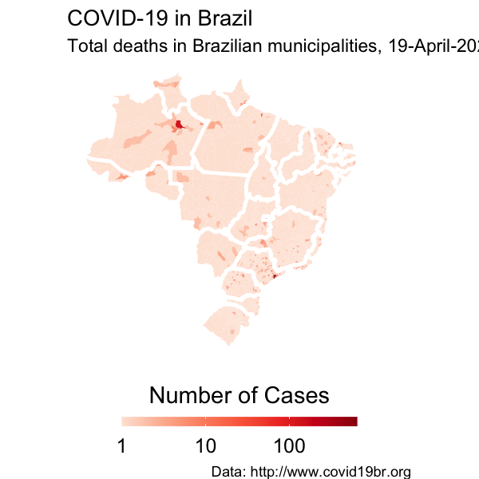

Modelo espaço-temporal da Covid-19 nos municípios brasileiros
Visto o atual cenário de pandemia global da doença do novo Coronavirus 2019 (Covid-19) e o fato do Brasil ser um dos principais países atingidos, resolvemos fazer uma análise preditiva espaço-temporal da vulnerabilidade dos municípios brasileiros a essa nova doença. Levamos em consideração diversos preditores como: tamanho da população residente, tamanho da população urbana com mais de 60 anos, etc...
Total de casos por município
